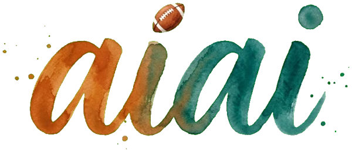

实战案例 01
实战案例 01
从一本书到会说话的绘本
一个急诊外科爸爸 + AI，10 天把孩子爱看的书做成漫画伴读、有声书和互动小游戏。完整展示需求怎么提、版本怎么迭代、人和 AI 怎么分工、哪些坑能直接避开。
- 年轻父母照着 30 分钟练习做出第一页
- 医生 / 护士看“谁提需求、谁拍板”的分工
- 科研人员看版本迭代、测试与真机验证
- 社会工作者看版权、隐私与防沉迷红线

人工智能学院AI × ART ACADEMYWELCOME · 欢迎来到我的 AI 课堂
Haixiang (Bruce) Ding, MD
急诊创伤外科医生 · 苏州大学临床医学博士在读 · 两个孩子的爸爸
我把抢救室里的团队协作、球场上的战术板，带进 AI 课堂：人做决定，AI 跑路线。
讲给医生、护士、科研人员、年轻父母和社会工作者
背景音乐：“Unity” Kevin MacLeod (incompetech.com) · CC BY 4.0
01THE ACADEMY
五个入口，从第一次打开 AI，到做出自己的作品。每一招都有能点开的真实案例。

每堂课一个球场比喻、一个急诊或科研场景、一道课堂练习。

线下工作坊和线上课的示范路线，投屏即可开讲。

我在 GitHub 公开的项目，很多可以课上直接打开。

必懂概念配球场比喻，常用工具写清怎么用、小心什么。

好友课程与优质资源，按主题整理，想深入就点进去。
用 AI 做给孩子的 11 款小游戏：棋类、益智、英语、闯关。课上就是一个“从想法到产品”的完整案例。
02PLAYBOOK
像橄榄球推进码数一样，一档一档往前推。点击任一档，作品馆只显示这一档的示范作品。
03GLOSSARY
每个概念一句话讲清楚，再配一个橄榄球比喻。按 L0–L4 排列，跟着档位学；点“深入学”跳到好友的完整课件。
04GEAR
不求全，只列课上真正会用到的。每件装备写清楚：擅长什么、医生怎么用、要小心什么。
05GALLERY
全部来自我的 GitHub 公开项目。在线演示可以课上直接打开；其余是源码和文档。
06PLAYGROUND
我给 7 岁的儿子和课堂准备的游戏馆：需求、规则和画风由我来定，代码由 AI 编写并跑过自动测试。浏览器直接打开，手机、平板、电脑都能玩，无需注册。
07LESSONS
线上线下课都按同一条主线讲，面向医生、护士、科研人员、年轻父母和社会工作者。先看一个完整实战案例，再按路线学。
实战案例 01
一个急诊外科爸爸 + AI，10 天把孩子爱看的书做成漫画伴读、有声书和互动小游戏。完整展示需求怎么提、版本怎么迭代、人和 AI 怎么分工、哪些坑能直接避开。
08TRAINING CAMP
每堂课一个主题，配一个球场比喻、一个急诊或科研里的真实场景、一道课堂练习。10 到 20 分钟一堂，按顺序练，也可以挑着练。
09FILM ROOM
10SAFETY
任何真实病历、影像、身份信息都不进入公共 AI。公开仓库只放代码与模拟数据。
每个论断标明：事实、关联还是推测。没有来源的结论不进课件。
AI 产出的诊疗、统计、专利、投稿内容，都要由专业人员最终确认。
证据不足时，宁可让 AI 说“查不到”，也不要让它编一个看似合理的答案。

11TOOLBOX
我收藏并在用的他人开源项目（fork），课上作为“装备库”介绍，和我自己的作品分开。

12COACH
急诊创伤外科主治医师，苏州大学临床医学博士在读。研究方向：放射性骨骼肌损伤、骨质疏松。把临床问题、教学经验和开源实践放在同一张战术板上，帮助医护人员从“想学 AI”走到“能用、用对”。